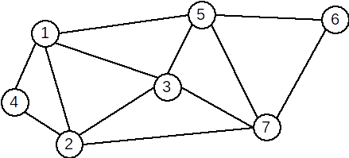

★Definiție. Se numește graf eulerian un graf care conține un ciclu eulerian. Se numește ciclu eulerian un ciclu care conține toate muchiile grafului.
★Exemplu: Graful următor este eulerian. Un ciclu eulerian este: \( [1,4,2,1,3,2,7,3,5,7,6,5,1] \)

★Teoremă: Un graf G = (X,U), fără vârfuri izolate, este eulerian dacă şi numai dacă este conex şi
gradele tuturor vârfurilor sale sunt numere pare.
★Pentru determinarea unui ciclu eulerian se pot folos mai mulți algoritmi. Unul dintre aceștia este asemănător cu parcurgerea în adâncime. Vom folosi o stivă (eventual memoria STACK prin intermediul recursivității)
1;k – nodul din vârful stiveix adiacente cu k. Eliminăm muchia [k,x] și adăugăm nodul x pe stivă (apel recursiv)
k într-o listăk din stivă★Important:
★Secvență C++:
Considerăm un graf cu n vârfuri, memorat prin intermediul matricei de adiacență, A[][]. Tabloul L[] reprezintă lista în care se memorează ciclul eulerian. Toate variabilele sunt globale:
void Euler(int k)
{
for(int i = 1 ; i <= n ; i ++)
if(A[k][i] == 1)
{
A[k][i] = A[i][k] = 0;
Euler(i);
}
L[++p] = k;
}
...
Euler(1);
...
★Algoritmul de mai sus poate fi utilizat și pentru determinarea unui lanț eulerian. Parcurgerea trebuie să înceapă însă din unul dintre vârfurile cu grad impar.